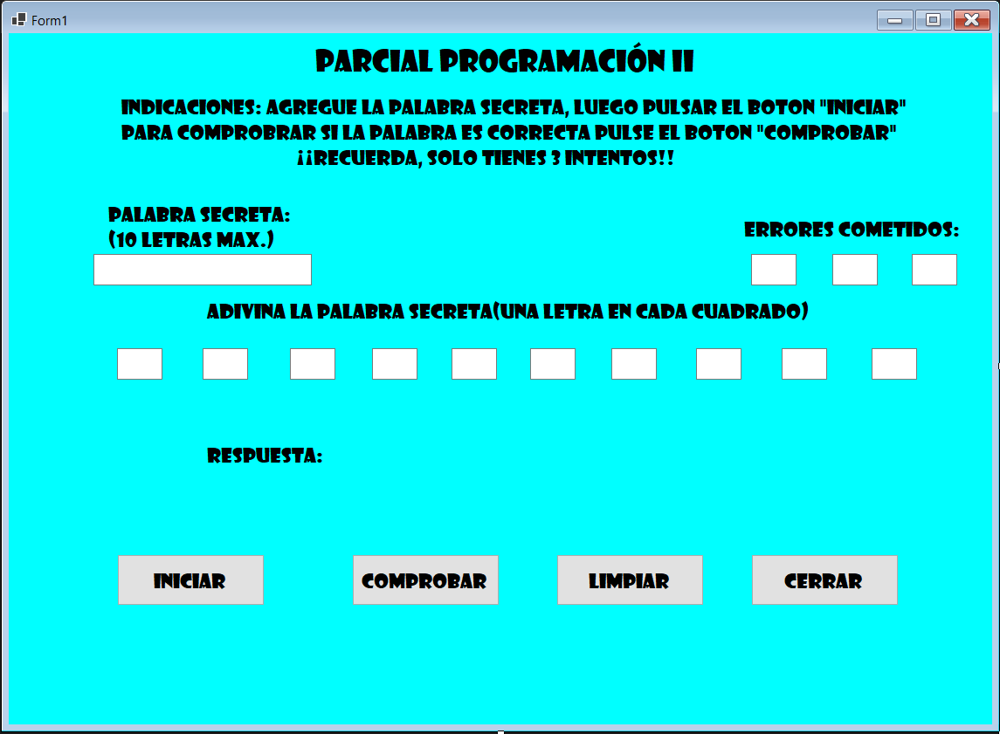
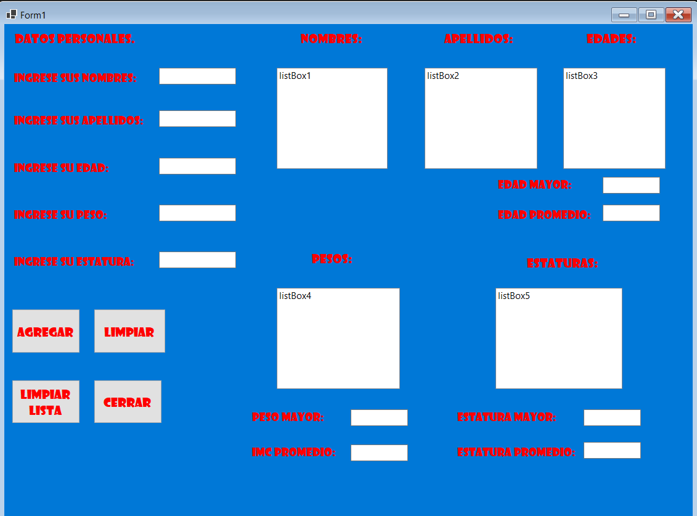

¡BIENVENIDO A MI BIOGRAFIA! Yo soy Miguel Alexander Córdova Torres, actualmente tengo 21 años, resido en Santa Ana, El Salvador; mis hobbies son escuchar música, practicar fútbol, jugar videojuegos y aprender mas acerca de programación.
Mi profesion es Ingeniería en Sistemas Informaticos, actualmente curso 3er año de esta carrera.
Actualmente curso mi carrera en la Universidad Cátolica de El Salvador (UNICAES)
Aprender y mejorar mis conocimientos acerca del desarrollo de softwares y bases de datos. Ademas podemos incluir la formación cientifica, tecnologica y socioeconomica.
El TOEIC (Test of English for International Communication) se trata de una prueba que mide las habilidades de inglés necesarias para el día a día en el lugar de trabajo. Es otra prueba desarrollada por la organización ETS. Este examen multinivel no se aprueba o suspende, sino que se obtiene una puntación por cada una de las partes presentadas. La prueba cuenta con unos descriptores que identifican las fortalezas y debilidades habituales que presentan los examinados en las distintas destrezas lingüísticas. Esta prueba es válida en más de 160 países, está reconocida por todas las universidades españolas para la obtención del grado y permite acreditar el nivel necesario para acceder a estudios del programa Erasmus, obtener becas. La institución en la cual realice la prueba fue en la Academia Europea ubicada en Santa Ana, donde primeramente curse los 25 niveles de inglés requeridos para poder realizar el examen TOEIC. En el boton de debajo he dejado link de acceso hacia Academia Europea.
Entre mis habilidades destacan el conocimiento del lunguaje de programación Java, asi mismo también el lenguaje de programación Phyton y como último lenguaje de programación el C#; ademas cuento con la habilidad de poder comunicarme por un segundo idioma, el Inglés, ademas de mi idioma natal el Español.

NOMBRE DEL PROYECTO: ADIVINA LA PALABRA SECRETA.
ROL EJERCIDO: DESARROLLADOR DEL PROGRAMA.
RESUMEN DEL PROYECTO: Este proyecto consistia en crear un programa en el cual el usuario 1 ingresaba una palabra y otro usuario, en este caso, el usuario 2 trataba de adivinar la palabra oculta que habia asignado el usuario 1 al programa; en un dado caso el usuario 2 pusiera una letra bien de la palabra esta se ponia en el recuadro correspondiente y el cuadro se volvia color verde, en caso contrario a la derecha se encuentran 3 recuadros que te señalan la cantidad de errores cometidos que llevas, teniendo en cuenta poder cometer 3 errores como máximo, y debajo te muestra el resultado en este caso la palabra oculta ya sea que la hayas encontrado o hayas cumplido los 3 errores permitidos.
TECNOLOGÍAS USADAS: LA APLICACIÓN VISUAL STUDIO 2019 Y EL LENGUAJE DE PROGRAMACIÓN C#.
NOMBRE DEL PROYECTO: HISTORIAL CLINICO.
ROL EJERCIDO: DESARROLLADOR DEL PROGRAMA.
RESUMEN DEL PROYECTO: Este proyecto consistia en crear un programa el cual registre los nombres de los "pacientes", su edad, su peso y su estatura correspondiente, ademas de hacer esto, el programa debia mantener los datos que fueran ingresados en la base de datos para que cuando el usuario quisiera consultar los datos que ha ido registrando en el programa este se los muestre en los listbox correspondientes a cada categoria que ha ingresado; ademas al programa se le agrego también la opción que mostrara en casillas separadas el dato mayor de cada categoria y la edad, peso y estatura promedio.
TECNOLOGÍAS USADAS: LA APLICACIÓN VISUAL STUDIO 2019 Y EL LENGUAJE DE PROGRAMACIÓN C#.
